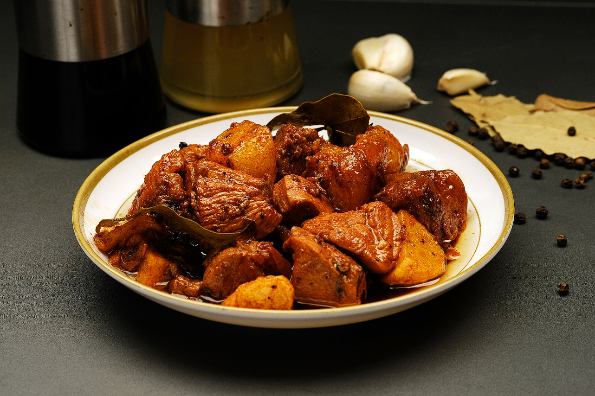
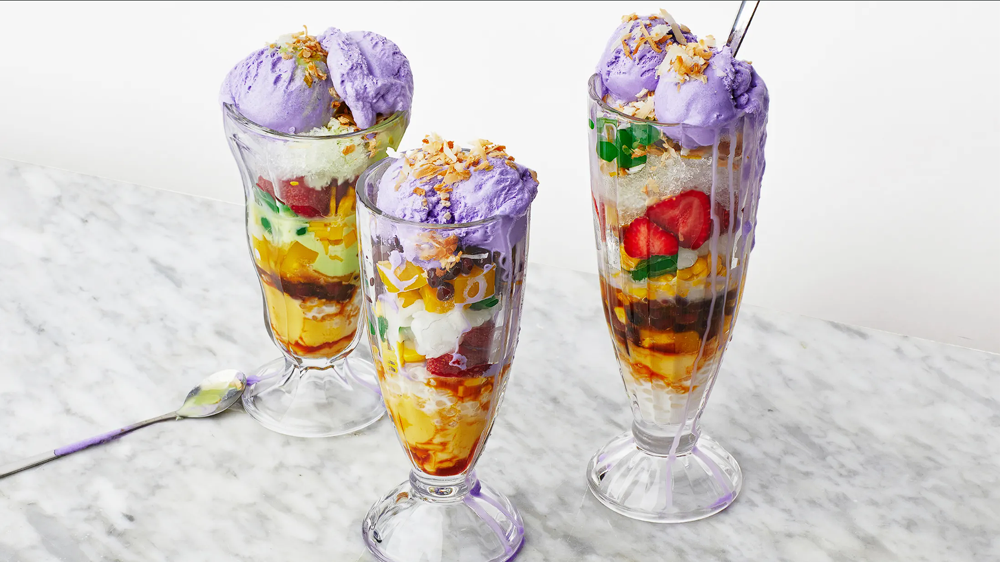

Popular Filipino Dishes

Chicken Adobo
The unofficial national dish — tender chicken braised in tangy garlic soy-vinegar sauce.

Lumpia Shanghai
Golden fried spring rolls filled with seasoned pork and vegetables.

Halo-Halo
A colourful shaved ice dessert loved by Filipinos worldwide.